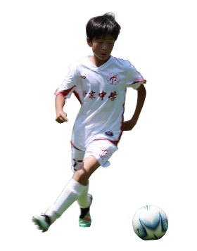

HOME ABOUT HELPThings That Make Me Me
I’m optimistic, independent-minded, and social. I enjoy sports, meeting people, and trying new ideas.
03 SELECTED PROJECTS
VIEW PROJECT →
EMAIL · SOCIALS
ABOUT ME
OPTIMISTIC • INDEPENDENT • SOCIAL
I enjoy sports, connecting with people, and bringing my own ideas to life.
VIEW MORE →
OPTIMISTIC • INDEPENDENT • SOCIAL
I enjoy sports, connecting with people, and bringing my own ideas to life.
VIEW MORE →
01 / Caffeine Mini Program
A mini program to help track caffeine intake.
VIEW PROJECT →
A mini program to help track caffeine intake.
VIEW PROJECT →
03 / Essay on Friendship
A personal essay about the friendship between my friend and me.
VIEW PROJECT →
A personal essay about the friendship between my friend and me.
VIEW PROJECT →
Home Page